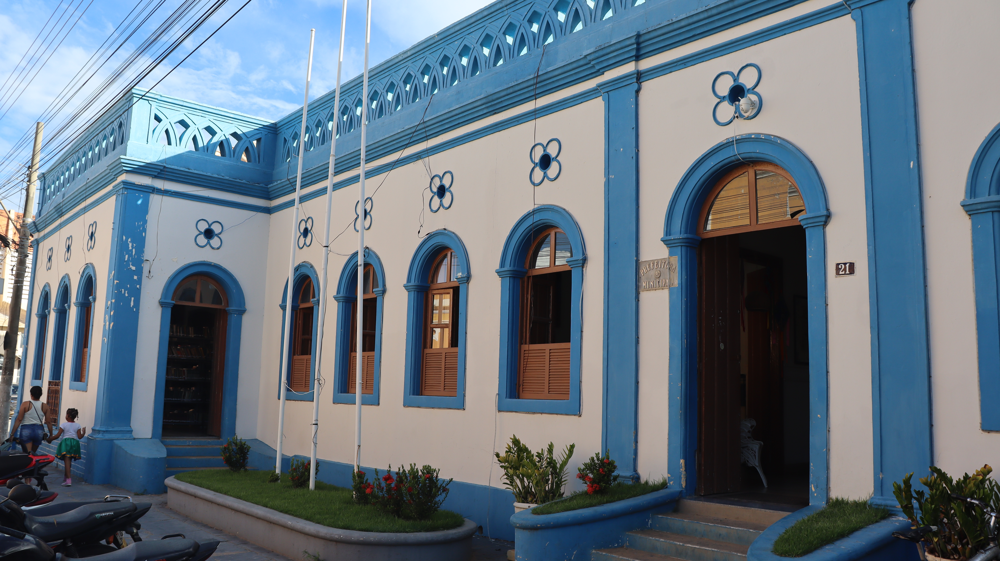

Sobre o local
A Biblioteca Pública Municipal Professor Manoel Ambrósio é o principal centro de leitura, pesquisa e preservação da memória bibliográfica de Januária. O espaço leva o nome e presta homenagem a Manoel Ambrósio Alves de Oliveira (1863–1936), uma das figuras intelectuais mais brilhantes e fundamentais da história do Norte de Minas Gerais. Nascido em Januária, foi escritor, professor, historiador, folclorista e pioneiro ao registrar com maestria a cultura popular, as lendas, a história regional e a identidade do povo barranqueiro em obras clássicas como Brasil Interior e Armas do Sertão.
Honrando o legado educacional e cultural do mestre, a biblioteca oferece à comunidade e aos visitantes um vasto acervo de literatura brasileira, obras acadêmicas, livros didáticos e títulos dedicados à história local e regional. O espaço funciona como um ponto de incentivo à leitura, estudos e pesquisa histórica, mantendo vivo o pensamento e a contribuição de um dos maiores expoentes intelectuais do sertão mineiro.
Informações sobre o local
Endereço: Praça Tiradentes, 76, Centro, Januária - MG
Horário de funcionamento: Segunda a sexta-feira, das 08:00 h às 17:00 h
Tipo de visita: Visita livre
Contato: Não há
Formas de pagamento: Não há cobrança para acesso
Pet-Friendly: Não
Site: Não há